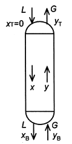

令和4年度 問33 化学プロセス
吸収塔で、液流量Z［kmol/h］のアミン水溶液により、流量G＝10 kmol/hの燃焼ガス中の10%CO2（yB＝0.10）を2%濃度（yT＝0.02）まで低減する。ここでyとxはそれぞれガス中及び吸収液中のCO2モル分率とし、添え字Tが塔頂、Bが塔底を示す。また、塔まわりのCO2物質収支は次式で表せるものとする（下図参照）。
L（xB－xT）＝G（yB－yT）（1）
ただし、LとGは塔内で一定と近似でき、xT＝0である。気液平衡関係はy＝1.42xとすると、この操作の最小液流量Lminは、塔底で気液平衡となる条件：
yB＝1.42xB（2）
及び、式（1）から求められる。実際の液流量Lを最小液流量Lminの2.0倍で操作したとき、最も近いxBの値はどれか。

①
0.015
②
0.035
③
0.04
④
0.07
⑤
0.08
正答
② 0.035
G＝10、yB＝0.10、yT＝0.02、xT＝0であることが分かっているため、不明な変数はLとxBのみです。
(2)式より、yB＝1.42xBであることから、xB＝yB / 1.42＝0.1 / 1.42＝0.07です。
(1)式より、Lmin(0.07 – 0)＝10(0.1 – 0.02)と代入し、Lmin＝11.43 kmol/hです。この2倍の液流量を流すため、11.43 × 2＝22.86 kmol/hの時のxBを求めます。
(1)式より、22.86(xB – 0)＝10(0.1 – 0.02)と代入でき、xB＝0.035です。